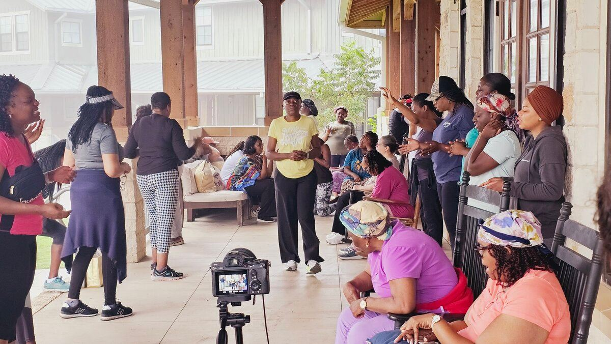
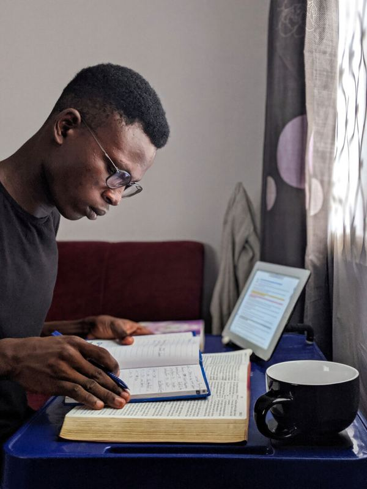

Arrows Prayers
Weekly prayer for our children, live on YouTube.
Go beyond belief. Become a disciple.
Join a global tribe growing in God’s Word, building a consistent prayer life, and learning to live as disciples, a few focused minutes at a time.

This is more than a community
Here you will find people committed to:
You do not need hours of free time. Just 30 minutes a day and a willing heart. [TO CONFIRM wording]
Who is this for?
Whether you are a new believer or you have walked with Christ for years, there is room for you.
The weekly rhythm
Every week the Tribe gathers online to pray, learn and be refilled. Pick one to start.
Weekly prayer for our children, live on YouTube.
Applying Bible wisdom to the real problems of everyday life.
Continual intercession and an online prayer portal open to the nations.
Rest, Refresh, Refire. Our annual gathering to come away and meet with God.
What makes us different
We do not water down the Word. We anchor people in it.
We are not just teaching people how to pray. We are building communities of spiritual firebrands across nations, through encounters, not religion. We use media and digital tools to disciple nations from any screen.

Our outreach arm
We do not just minister from the pulpit. We minister from the streets. Whispering Hearts is where our compassion becomes action: we feed the hungry, clothe the broken and sit with the grieving.
In a single food outreach, we served 40 widows.
You are seen. You are loved. You are not forgotten.
Are you ready?
“Go therefore and make disciples of all the nations…”Matthew 28:19
Join Boundless Disciple Tribe today and begin your discipleship journey with believers who are passionately pursuing Christ together.
Join the Tribe on Facebook [TO CONFIRM link]